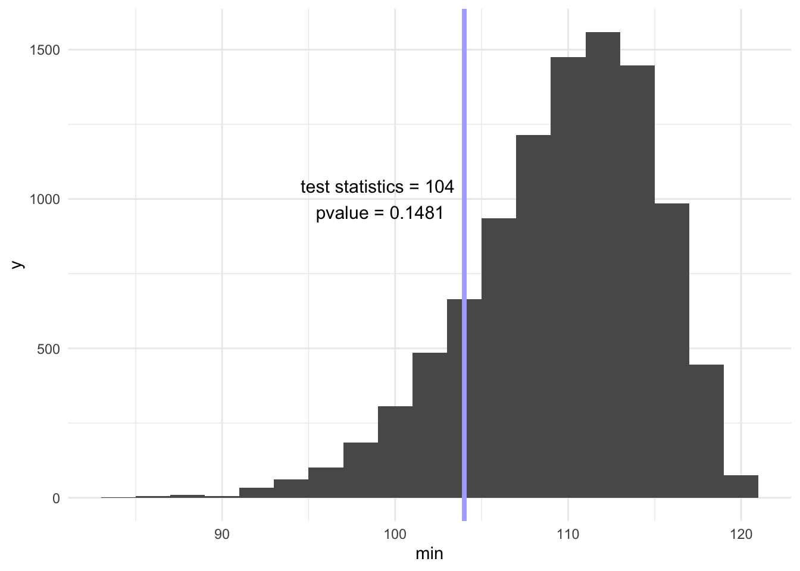
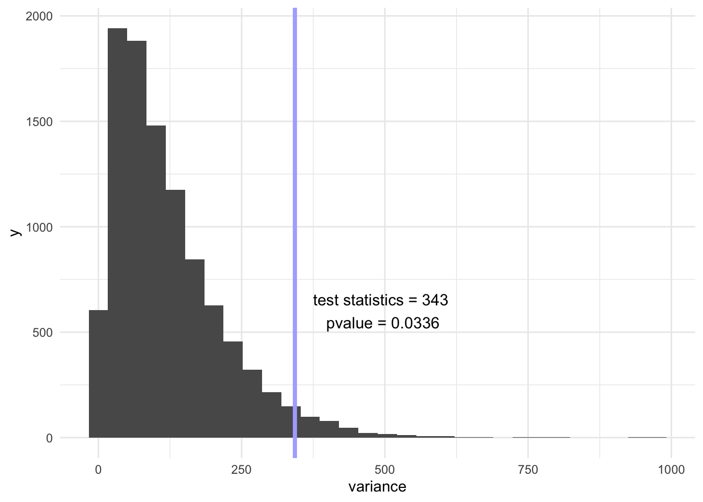
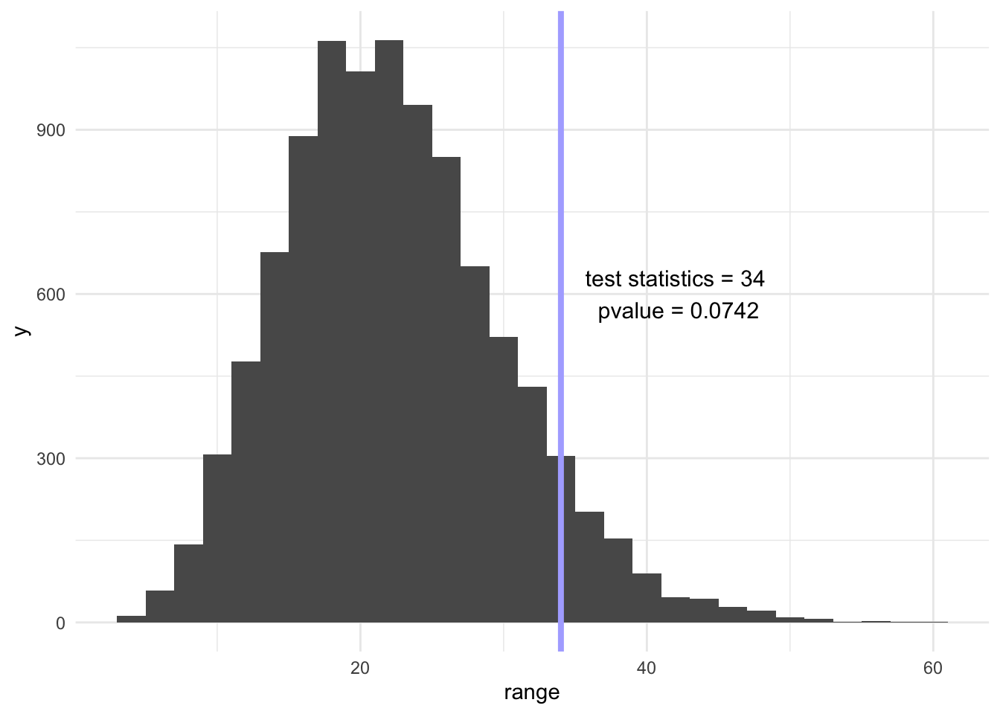

library(tidyverse)
library(ggplot2)
# How many simulations to run?
NumberOfSims <- 10000
NumberofBalls <- 500 - 14
set.seed(123) # set the seed for the random number generator - this makes sure the results are reproducible when we are debugging
# create blank vectors to store values
vec <- vector()
vec2 <- vector()
vec3 <- vector()
vec4 <- vector()
theme_set(theme_minimal())
Problem
Allan Rossman used to live along a golf course and collected the golf balls that landed in his yard. Most of these golf balls had a number on them. Allan tallied the numbers on the first 500 golf balls that landed in his yard one summer.
Specifically. he collected the following data: 137 golf balls numbered 1 138 golf balls numbered 2 107 golf balls numbered 3 104 golf balls numbered 4 14 “others” (Either with a different number, or no number at all. We will ignore these other balls for the purposes of this question.)
Question: What is the distribution of these numbers? In particular, are the numbers 1, 2, 3, and 4 equally likely?
My solutions
Simulation
# compute maximum frequency for each simlation
for (j in 1:NumberOfSims) {
for (i in 1:NumberofBalls) {
vec[i] <- sample(1:4, 1)
}
vec2[j] <- max(table(vec))
}
# compute minimum frequency for each simlation
for (j in 1:NumberOfSims) {
for (i in 1:NumberofBalls) {
vec[i] <- sample(1:4, 1)
}
vec3[j] <- min(table(vec))
}
# compute range of frequency for each simlation
range <- vec2 - vec3
# compute variance of frequency for each simlation
for (j in 1:NumberOfSims) {
for (i in 1:NumberofBalls) {
vec[i] <- sample(1:4, 1)
}
vec4[j] <- var(table(vec))
}
df <- cbind(vec2, vec3, vec4, range) %>% as.data.frame()
colnames(df) <- c("max", "min", "variance", "range")
dim(df)[1] 10000 4head(df) max min variance range
1 136 112 11.66667 24
2 136 117 268.33333 19
3 138 116 43.00000 22
4 133 108 95.00000 25
5 129 116 73.66667 13
6 137 111 107.00000 26Minimum frequency
# observed vector
obs <- c(137, 138, 107, 104)
# calculate test statistics
min(obs)[1] 104# calculate p-value
a <- df %>%
filter(min > min(obs)) %>%
nrow()
pvalue <- 1 - a / NumberOfSims
pvalue[1] 0.1481ggplot(aes(x = min), data = df) +
geom_histogram(binwidth = 2) +
geom_vline(xintercept = min(obs), size = 1.4, color = "#AFAFFF") +
annotate("text", x = min(obs) - 5, y = 1000, label = " test statistics = 104 \n pvalue = 0.1481", size = 4)
Variance
# calculate test statistics
var(obs)[1] 343# calculate p-value
a <- df %>%
filter(variance > var(obs)) %>%
nrow()
pvalue <- a / NumberOfSims
pvalue[1] 0.0336# draw the graph
ggplot(aes(x = variance), data = df) +
geom_histogram() +
geom_vline(xintercept = var(obs), size = 1.4, color = "#AFAFFF") +
annotate("text", x = var(obs) + 150, y = 600, label = " test statistics = 343 \n pvalue = 0.0336", size = 4)
Range
# calculate test statistics
max(obs) - min(obs)[1] 34# calculate p-value
a <- df %>%
filter(range > max(obs) - min(obs)) %>%
nrow()
pvalue <- a / NumberOfSims
pvalue[1] 0.0742# draw the graph
ggplot(aes(x = range), data = df) +
geom_histogram() +
geom_vline(xintercept = max(obs) - min(obs), size = 1.4, color = "#AFAFFF") +
annotate("text", x = max(obs) - min(obs) + 8, y = 600, label = " test statistics = 34 \n pvalue = 0.0742", size = 4)
I tried 3 test statistics using simulation-based hypothesis tests. My null hypothesis here is that the numbers 1, 2, 3, and 4 distribute equally. My alternative hypothesis here is that the numbers 1, 2, 3, and 4 do not distribute equally.
Using minimum frequency of ball number among 486 balls as the test statistics, we simulated 10000 times and made a histogram for these 10000 minimum frequency. Our observed test statistics = 104 and our pvalue = 0.1481. Thus, with the significance level of 0.05, we fail to reject the null hypothesis that the numbers 1, 2, 3, and 4 distribute equally likely.
Using variance of the frequency of the numbers 1, 2, 3, and 4 as the test statistics, we simulated 10000 times and made a histogram for these 10000 minimum frequency. Our observed test statistics = 343 and our pvalue = 0.0336. Thus, with the significance level of 0.05, we reject the null hypothesis and conclude that the numbers 1, 2, 3, and 4 do not distribute equally.
Using range of the frequency of the numbers 1, 2, 3, and 4 as the test statistics, we simulated 10000 times and made a histogram for these 10000 minimum frequency. Our observed test statistics = 34 and our pvalue = 0.0742 Thus, with the significance level of 0.05, we fail to reject the null hypothesis that the numbers 1, 2, 3, and 4 distribute equally.
Reuse
Citation
BibTeX citation:
@online{xu2020,
author = {Keren Xu},
editor = {},
title = {Golf {Balls} {Simulation}},
date = {2020-02-02},
url = {https://xukeren.github.io//posts/2020-02-02-golf-balls-simulation},
langid = {en}
}
For attribution, please cite this work as:
Keren Xu. 2020. “Golf Balls Simulation.” February 2, 2020.
https://xukeren.github.io//posts/2020-02-02-golf-balls-simulation.